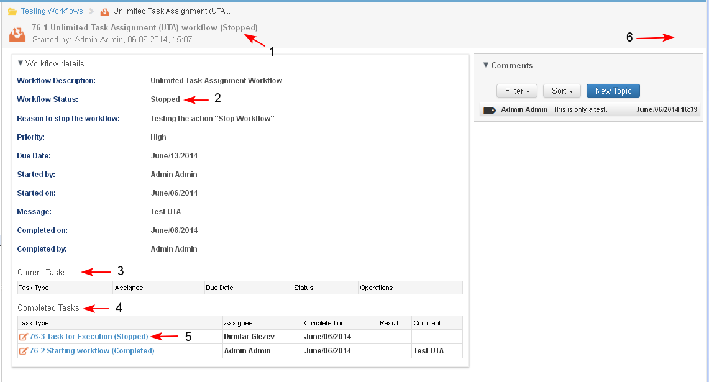

A workflow which is in status "In Progress" may be stopped by the user who has started the workflow.
Preconditions
The workflow is "In Progress" and is opened for preview.
The currently logged user is the originator of the workflow.
- The user clicks the button "Stop Workflow" (1-2).

- The system opens the screen where the user enters the reasons for cancellation of the workflow in plain text and then clicks the button "Cancel Workflow" (1-2).

- The system opens the Case Dashboard screen.
- In the "Workflows" dashlet the workflow may be found in filter "All Workflows" and its status is changed to "Stopped" (1-2).
- No Active Task for that workflow are visible in the "Tasks" dashlet. The task may be found in filter "All Tasks" (3) and its status is "Stopped" (4).
- The user selects the link (2) to open the workflow details page.

- The system opens the workflow details in preview mode. For the stopped workflow:
- The workflow status is changed to "Stopped" (1-2).
- No tasks are visible in the Current Tasks section (3).
- The status of all acvtive tasks in the workflow when the workflow was stopped is changed to "Stopped" and are moved into section "Completed Tasks" (4-5).
- No actions are available for a workflow in status "Stopped" (6).
